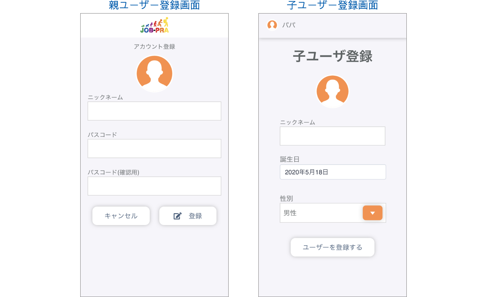
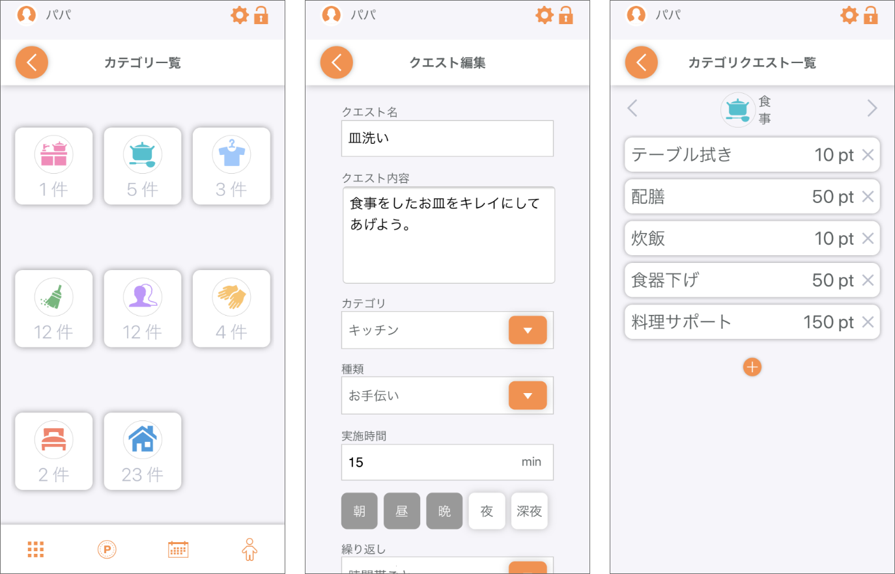
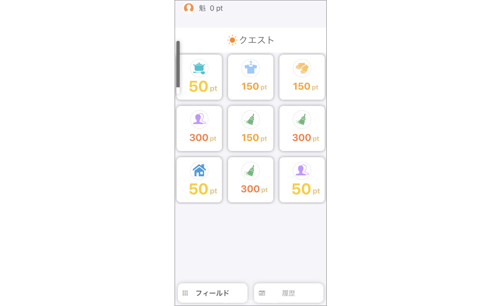

JOB-PRAとは
JOB-PRA（Job Practice = 仕事の練習）は、
お手伝いを家庭内で管理するためのアプリです。
-
社会での仕事の多くは、
?
家庭内のお手伝いの延長線上にあります。 -
お手伝いは、朝・昼・晩・夜・深夜
５つの時間帯ごとに設定が出来ます。 -
お手伝いをこなすことで、働くことを体験し、
?
「お手伝いポイント」を稼ぐことで対価を体験します。 -
お手伝いは、朝・昼・晩・夜・深夜
５つの時間帯ごとに設定が出来ます。 -
決められた時間帯でこなす意識を
芽生えさせることが出来ます。
社会で働くための準備を
楽しく管理しましょう！
ご利用方法
簡単登録
２ＳＴＥＰ

お手伝いを管理する親ユーザーと、
お手伝いを実施する子ユーザーの登録です。
クエストの登録・管理（親御様）
JOB-PRAでは、お手伝いをクエストとして扱います。
最初の段階で、アプリ側でいくつか登録されてますので、
それを元に、修正したり新たに追加してください。
クエストの実行（お子様）
あとは、子ユーザーでクエストを実行する
非常にシンプルなアプリです。
体験談 USER VOICE
Aさん４０才（女性） ２児の育児中
子供たちのやることをホワイトボードにマグネットをつけて管理してました。
しかし、いつ何をやったかというのはメモしたり、記憶をたどったりと面倒でした。JOB-PRAはこのような問題を解決してくれて助かってます。
Bさん４３才（男性） ３児の育児中
うちでは月のお小遣いを定額ではなく、お手伝いの対価として与えてます。例えば、お風呂掃除は１回50円という感じです。しかし、やったかどうかを管理することができていなくちゃんとした管理ができていませんでした。
JOB-PRAでは、そのへんを管理できてよいと思います。
FAQ
Q.朝、昼、晩、夜、深夜の時間帯を変更することはできますか？
A.時間帯を変更することはできません。各時間帯は以下の設定となっております。朝（5時-11時）、昼（11時-15時）、晩（15時-18時）、夜（18時 -24時）、深夜（0時-5時）
Q.ビンゴのポイントを変更することはできますか？
A.ビンゴは１pt、コンプリートは１０ptの設定になっており変更はできません。